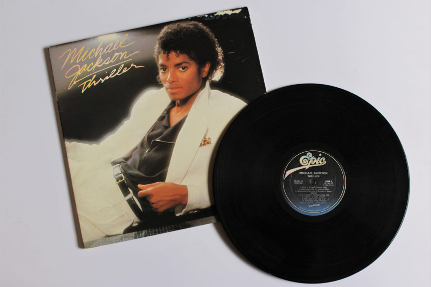
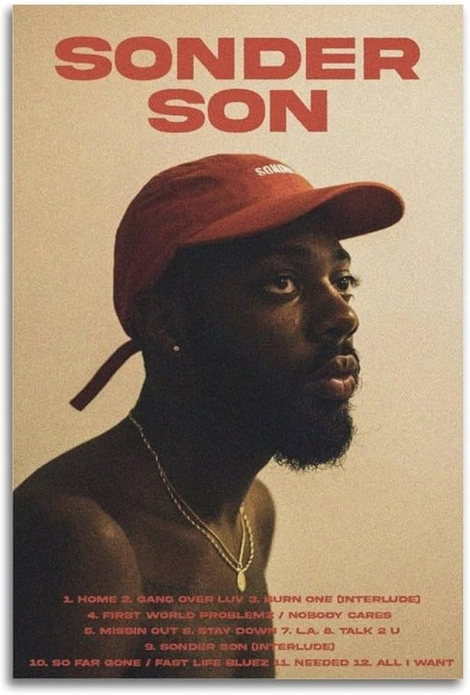
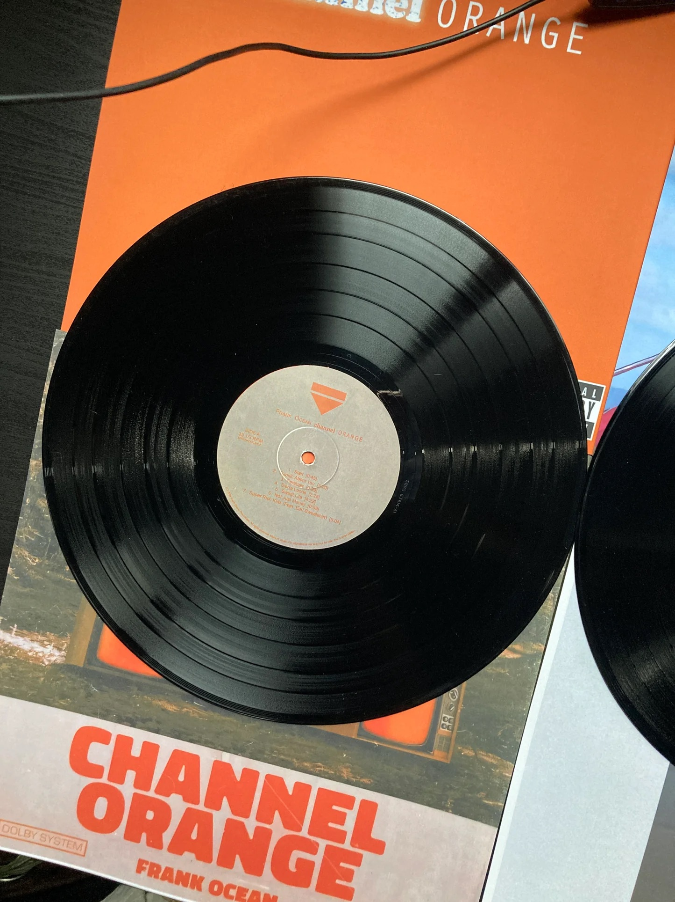
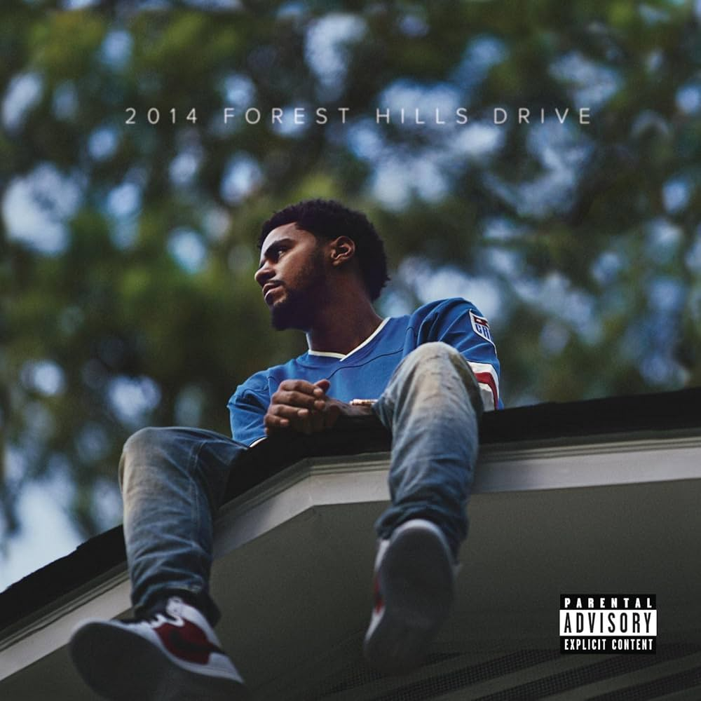
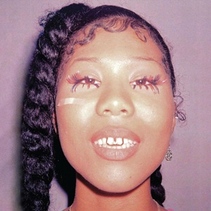

Hello and welcome to the one and only Kweku’s virtual, the one of a kind record shop in which you will have access to the top five records of all time! This is a beta test, so our collection will expand but please, bear with us and enjoy the power of music!
| Album Cover | Album Details |
|---|---|
|  |
Michael Jackson - ThrillerMichael Jackson aka the King of Pop. Is arguably the greatest musician of all time. His album “Thriller” is a staple in music history and has acted as a major contributor to music. A man who could dance, sing like no other and had a presence that even made his fans faint? There has never been a man like Michael Jackson and I don’t think there ever will be. Top song: The Girl Is Mine |
|  |
Brent Faiyaz - Sonder SonBrent Faiyaz, a man who is described as “toxic” is one of the R&B rising stars. He made his debut with this phenomenal album in which he speaks about upbringing and his view on the world. It is a work of art and is his most revered work. He put not only a new spin on R&B but vocals that touch the soul. Top song: So Far Gone/Fast Life Bluez |
|  |
Frank Ocean - Channel OrangeFrank Ocean, often described as an anomaly in the music industry, is one of the most popular artists. Despite the fact that he does not frequently release music, his unconventional sound and amazing vocals often catch people off guard. His music is timeless, drawing fans who continue to beg for a new sound to emerge. His music is not just rhythm, blues, and soul—it’s a deeper look into one’s own psychology. Top song: Sierra Leone |
|  |
J. Cole - 2014 Forest Hills DriveJermaine Cole, lyricist, songwriter, and rapper, is one of the most real individuals in music. He sticks to his sound, and boy, is he good at it. He consistently creates hits with mind-blowing rhymes. In my opinion, he is one of the greatest rappers, as his lyrics empower people and teach them to appreciate the things they have in life. He is a philanthropist and a man guided by faith, a low-key superstar who remains one of the greatest rappers the world has ever seen. Top song: Love Yourz |
|  |
Drake & 21 Savage - Her LossWhat is the best rap duo album ever made? Her Loss, by the worldwide sensation Drake and the king of features 21 Savage, is a masterpiece. This album was fantastic and groundbreaking in terms of its flow and sheer enjoyment. These two artists are on top of the scene and continue to amaze with each album. Top song: Hours in Silence |
| Artist Name | Album Name | Price |
|---|---|---|
| Michael Jackson | Thriller | $20.00 |
| Brent Faiyaz | Sonder Son | $15.00 |
| Frank Ocean | Channel Orange | $18.00 |
| J. Cole | 2014 Forest Hills Drive | $22.00 |
| Drake & 21 Savage | Her Loss | $25.00 |